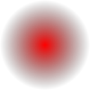

CSS-Shapes: Formen
Kreis
Ein Kreis. Eine eckige Box in einer eckigen Box in einer eckigen Box, alle mit Padding, Border und Margin – so sehen Webseiten durch die CSS-Brille betrachtet aus. Zwar kann man mit Stylesheets längst auch andere Formen als Vierecke zeichnen, wenn man zu Hacks mit Transparenz und Border-Radius greift. Doch was fürs Auge wie ein Kreis oder ein Dreieck aussieht, bleibt für den Renderer immer noch ein Rechteck. Der Unterschied macht sich bemerkbar, wenn Sie Text um das Element herumfließen lassen. Statt sich elegant an einer Rundung oder Schräge auszurichten – wie man es in praktisch jeder Illustrierten sehen kann –, verläuft der linke Textrand in HTML und CSS stets exakt senkrecht. Diese Beschränkung im Web zu umgehen, war bisher nur mit SVG oder einzeln ausgerichteten Zeilen (manuell oder per JavaScript) möglich.
Skalierter Kreis
Ein vergrößerter und positionierter Kreis. Eine eckige Box in einer eckigen Box in einer eckigen Box, alle mit Padding, Border und Margin – so sehen Webseiten durch die CSS-Brille betrachtet aus. Zwar kann man mit Stylesheets längst auch andere Formen als Vierecke zeichnen, wenn man zu Hacks mit Transparenz und Border-Radius greift. Doch was fürs Auge wie ein Kreis oder ein Dreieck aussieht, bleibt für den Renderer immer noch ein Rechteck. Der Unterschied macht sich bemerkbar, wenn Sie Text um das Element herumfließen lassen. Statt sich elegant an einer Rundung oder Schräge auszurichten – wie man es in praktisch jeder Illustrierten sehen kann –, verläuft der linke Textrand in HTML und CSS stets exakt senkrecht. Diese Beschränkung im Web zu umgehen, war bisher nur mit SVG oder einzeln ausgerichteten Zeilen (manuell oder per JavaScript) möglich.
Skalierter Kreis mit Margin
Wie oben, aber mit shape-margin. Eine eckige Box in einer eckigen Box in einer eckigen Box, alle mit Padding, Border und Margin – so sehen Webseiten durch die CSS-Brille betrachtet aus. Zwar kann man mit Stylesheets längst auch andere Formen als Vierecke zeichnen, wenn man zu Hacks mit Transparenz und Border-Radius greift. Doch was fürs Auge wie ein Kreis oder ein Dreieck aussieht, bleibt für den Renderer immer noch ein Rechteck. Der Unterschied macht sich bemerkbar, wenn Sie Text um das Element herumfließen lassen. Statt sich elegant an einer Rundung oder Schräge auszurichten – wie man es in praktisch jeder Illustrierten sehen kann –, verläuft der linke Textrand in HTML und CSS stets exakt senkrecht. Diese Beschränkung im Web zu umgehen, war bisher nur mit SVG oder einzeln ausgerichteten Zeilen (manuell oder per JavaScript) möglich.
Ellipse
Eine Ellipse. Eine eckige Box in einer eckigen Box in einer eckigen Box, alle mit Padding, Border und Margin – so sehen Webseiten durch die CSS-Brille betrachtet aus. Zwar kann man mit Stylesheets längst auch andere Formen als Vierecke zeichnen, wenn man zu Hacks mit Transparenz und Border-Radius greift. Doch was fürs Auge wie ein Kreis oder ein Dreieck aussieht, bleibt für den Renderer immer noch ein Rechteck. Der Unterschied macht sich bemerkbar, wenn Sie Text um das Element herumfließen lassen. Statt sich elegant an einer Rundung oder Schräge auszurichten – wie man es in praktisch jeder Illustrierten sehen kann –, verläuft der linke Textrand in HTML und CSS stets exakt senkrecht. Diese Beschränkung im Web zu umgehen, war bisher nur mit SVG oder einzeln ausgerichteten Zeilen (manuell oder per JavaScript) möglich.
Inset
Eine verkleinerte Box. Eine eckige Box in einer eckigen Box in einer eckigen Box, alle mit Padding, Border und Margin – so sehen Webseiten durch die CSS-Brille betrachtet aus. Zwar kann man mit Stylesheets längst auch andere Formen als Vierecke zeichnen, wenn man zu Hacks mit Transparenz und Border-Radius greift. Doch was fürs Auge wie ein Kreis oder ein Dreieck aussieht, bleibt für den Renderer immer noch ein Rechteck. Der Unterschied macht sich bemerkbar, wenn Sie Text um das Element herumfließen lassen. Statt sich elegant an einer Rundung oder Schräge auszurichten – wie man es in praktisch jeder Illustrierten sehen kann –, verläuft der linke Textrand in HTML und CSS stets exakt senkrecht. Diese Beschränkung im Web zu umgehen, war bisher nur mit SVG oder einzeln ausgerichteten Zeilen (manuell oder per JavaScript) möglich.
Polygon
Ein Polygon. Eine eckige Box in einer eckigen Box in einer eckigen Box, alle mit Padding, Border und Margin – so sehen Webseiten durch die CSS-Brille betrachtet aus. Zwar kann man mit Stylesheets längst auch andere Formen als Vierecke zeichnen, wenn man zu Hacks mit Transparenz und Border-Radius greift. Doch was fürs Auge wie ein Kreis oder ein Dreieck aussieht, bleibt für den Renderer immer noch ein Rechteck. Der Unterschied macht sich bemerkbar, wenn Sie Text um das Element herumfließen lassen. Statt sich elegant an einer Rundung oder Schräge auszurichten – wie man es in praktisch jeder Illustrierten sehen kann –, verläuft der linke Textrand in HTML und CSS stets exakt senkrecht. Diese Beschränkung im Web zu umgehen, war bisher nur mit SVG oder einzeln ausgerichteten Zeilen (manuell oder per JavaScript) möglich.
Ein PNG-Bild. Eine eckige Box in einer eckigen Box in einer eckigen Box, alle mit Padding, Border und Margin – so sehen Webseiten durch die CSS-Brille betrachtet aus. Zwar kann man mit Stylesheets längst auch andere Formen als Vierecke zeichnen, wenn man zu Hacks mit Transparenz und Border-Radius greift. Doch was fürs Auge wie ein Kreis oder ein Dreieck aussieht, bleibt für den Renderer immer noch ein Rechteck. Der Unterschied macht sich bemerkbar, wenn Sie Text um das Element herumfließen lassen. Statt sich elegant an einer Rundung oder Schräge auszurichten – wie man es in praktisch jeder Illustrierten sehen kann –, verläuft der linke Textrand in HTML und CSS stets exakt senkrecht. Diese Beschränkung im Web zu umgehen, war bisher nur mit SVG oder einzeln ausgerichteten Zeilen (manuell oder per JavaScript) möglich.
Ein GIF-Bild. Eine eckige Box in einer eckigen Box in einer eckigen Box, alle mit Padding, Border und Margin – so sehen Webseiten durch die CSS-Brille betrachtet aus. Zwar kann man mit Stylesheets längst auch andere Formen als Vierecke zeichnen, wenn man zu Hacks mit Transparenz und Border-Radius greift. Doch was fürs Auge wie ein Kreis oder ein Dreieck aussieht, bleibt für den Renderer immer noch ein Rechteck. Der Unterschied macht sich bemerkbar, wenn Sie Text um das Element herumfließen lassen. Statt sich elegant an einer Rundung oder Schräge auszurichten – wie man es in praktisch jeder Illustrierten sehen kann –, verläuft der linke Textrand in HTML und CSS stets exakt senkrecht. Diese Beschränkung im Web zu umgehen, war bisher nur mit SVG oder einzeln ausgerichteten Zeilen (manuell oder per JavaScript) möglich.

Ein SVG-Bild. Eine eckige Box in einer eckigen Box in einer eckigen Box, alle mit Padding, Border und Margin – so sehen Webseiten durch die CSS-Brille betrachtet aus. Zwar kann man mit Stylesheets längst auch andere Formen als Vierecke zeichnen, wenn man zu Hacks mit Transparenz und Border-Radius greift. Doch was fürs Auge wie ein Kreis oder ein Dreieck aussieht, bleibt für den Renderer immer noch ein Rechteck. Der Unterschied macht sich bemerkbar, wenn Sie Text um das Element herumfließen lassen. Statt sich elegant an einer Rundung oder Schräge auszurichten – wie man es in praktisch jeder Illustrierten sehen kann –, verläuft der linke Textrand in HTML und CSS stets exakt senkrecht. Diese Beschränkung im Web zu umgehen, war bisher nur mit SVG oder einzeln ausgerichteten Zeilen (manuell oder per JavaScript) möglich.
Unsichtbares Bild
Die Kontur des obigen SVG-Bildes. Eine eckige Box in einer eckigen Box in einer eckigen Box, alle mit Padding, Border und Margin – so sehen Webseiten durch die CSS-Brille betrachtet aus. Zwar kann man mit Stylesheets längst auch andere Formen als Vierecke zeichnen, wenn man zu Hacks mit Transparenz und Border-Radius greift. Doch was fürs Auge wie ein Kreis oder ein Dreieck aussieht, bleibt für den Renderer immer noch ein Rechteck. Der Unterschied macht sich bemerkbar, wenn Sie Text um das Element herumfließen lassen. Statt sich elegant an einer Rundung oder Schräge auszurichten – wie man es in praktisch jeder Illustrierten sehen kann –, verläuft der linke Textrand in HTML und CSS stets exakt senkrecht. Diese Beschränkung im Web zu umgehen, war bisher nur mit SVG oder einzeln ausgerichteten Zeilen (manuell oder per JavaScript) möglich.

Ein SVG-Bild. Eine eckige Box in einer eckigen Box in einer eckigen Box, alle mit Padding, Border und Margin – so sehen Webseiten durch die CSS-Brille betrachtet aus. Zwar kann man mit Stylesheets längst auch andere Formen als Vierecke zeichnen, wenn man zu Hacks mit Transparenz und Border-Radius greift. Doch was fürs Auge wie ein Kreis oder ein Dreieck aussieht, bleibt für den Renderer immer noch ein Rechteck. Der Unterschied macht sich bemerkbar, wenn Sie Text um das Element herumfließen lassen. Statt sich elegant an einer Rundung oder Schräge auszurichten – wie man es in praktisch jeder Illustrierten sehen kann –, verläuft der linke Textrand in HTML und CSS stets exakt senkrecht. Diese Beschränkung im Web zu umgehen, war bisher nur mit SVG oder einzeln ausgerichteten Zeilen (manuell oder per JavaScript) möglich.
Eine Box. Hier kann man beliebig viel Text reinschreiben, er wird abgeschnitten, wenn er nicht hineinpasst, zum Beispiel dieser hier.
Eine Box entlang des Außenrahmens. Eine eckige Box in einer eckigen Box in einer eckigen Box, alle mit Padding, Border und Margin – so sehen Webseiten durch die CSS-Brille betrachtet aus. Zwar kann man mit Stylesheets längst auch andere Formen als Vierecke zeichnen, wenn man zu Hacks mit Transparenz und Border-Radius greift. Doch was fürs Auge wie ein Kreis oder ein Dreieck aussieht, bleibt für den Renderer immer noch ein Rechteck. Der Unterschied macht sich bemerkbar, wenn Sie Text um das Element herumfließen lassen. Statt sich elegant an einer Rundung oder Schräge auszurichten – wie man es in praktisch jeder Illustrierten sehen kann –, verläuft der linke Textrand in HTML und CSS stets exakt senkrecht. Diese Beschränkung im Web zu umgehen, war bisher nur mit SVG oder einzeln ausgerichteten Zeilen (manuell oder per JavaScript) möglich.
Eine Box. Hier kann man beliebig viel Text reinschreiben, er wird abgeschnitten, wenn er nicht hineinpasst, zum Beispiel dieser hier.
Eine Box mit clip-path. Eine eckige Box in einer eckigen Box in einer eckigen Box, alle mit Padding, Border und Margin – so sehen Webseiten durch die CSS-Brille betrachtet aus. Zwar kann man mit Stylesheets längst auch andere Formen als Vierecke zeichnen, wenn man zu Hacks mit Transparenz und Border-Radius greift. Doch was fürs Auge wie ein Kreis oder ein Dreieck aussieht, bleibt für den Renderer immer noch ein Rechteck. Der Unterschied macht sich bemerkbar, wenn Sie Text um das Element herumfließen lassen. Statt sich elegant an einer Rundung oder Schräge auszurichten – wie man es in praktisch jeder Illustrierten sehen kann –, verläuft der linke Textrand in HTML und CSS stets exakt senkrecht. Diese Beschränkung im Web zu umgehen, war bisher nur mit SVG oder einzeln ausgerichteten Zeilen (manuell oder per JavaScript) möglich.